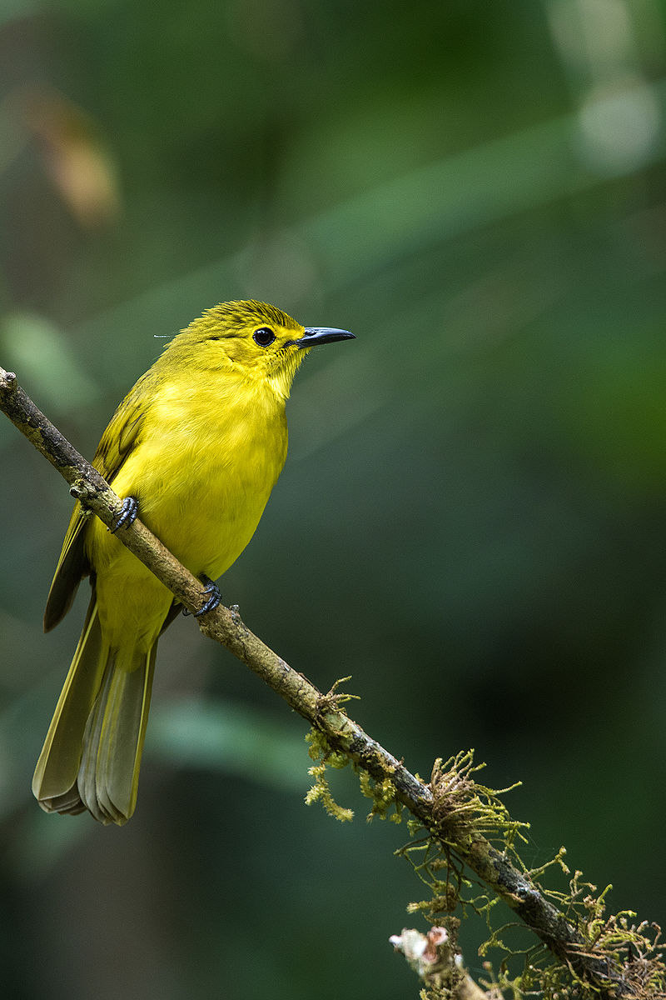
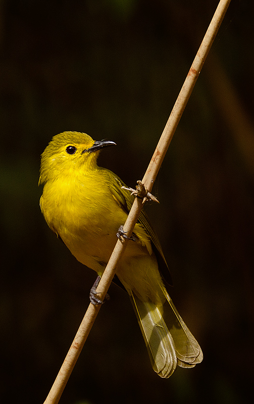

The Yellow-browed Bulbul is a bright, energetic songbird found in southern India and Sri Lanka. Its vivid yellow plumage and sharp calls make it easy to recognize in forests.

This bulbul lives below the forest canopy in hill forests and plantations. It moves in pairs or small groups, feeds on berries and insects, and breeds before the monsoon season.
Read more about the Yellow-browed Bulbul and its wonderous characteristics on portals like E-Bird.